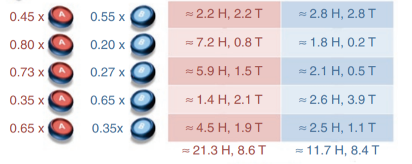

2. EM algorithm
1. 引子: 抛硬币
e.g. 两枚硬币记作 A, B，以相同概率每次随机选择一个抛十次，试验结果
1: H T T T H H T H T H 5H, 5T
2: H H H H T H H H H H 9H, 1T
3: H T H H H H H T H H 8H, 2T
4: H T H T T T H H T T 4H, 6T
5: T H H H T H H H T H 7H, 3T
估计硬币 A 和 B head 出现的概率 $\hat{p}_{_A},\ \hat{p}_{_B}$
已知: latent variable $Z=\lbrace z_1,z_2,z_3,z_4,z_5 \rbrace$ 和 observable variable $Y = \lbrace y_1,y_2,y_3,y_4,y_5 \rbrace$，其中
$y_i=$ 第 $i$ 次试验正面朝上的硬币数。
由于 $Z$ 未知，无法直接使用 MLE。EM 算法的思路是，首先给定初始参数 $\theta^{(0)} = \lbrace {p} _ { _ A}^{(0)},\ p _ { _ B}^{(0)} \rbrace = \lbrace 0.6,\ 0.5 \rbrace$，使用 $\theta^{(0)}$ 估计 $Z$ 的概率分布:
$P(z_1=A|y_1;\ \theta^{(0)}) = 0.45,\qquad P(z_1=B|y_1;\ \theta^{(0)}) = 0.55$
$P(z_2=A|y_2;\ \theta^{(0)}) = 0.80,\qquad P(z_2=B|y_2;\ \theta^{(0)}) = 0.20$
$P(z_3=A|y_3;\ \theta^{(0)}) = 0.73,\qquad P(z_3=B|y_3;\ \theta^{(0)}) = 0.27$
$P(z_4=A|y_4;\ \theta^{(0)}) = 0.35,\qquad P(z_4=B|y_4;\ \theta^{(0)}) = 0.65$
$P(z_5=A|y_5;\ \theta^{(0)}) = 0.65,\qquad P(z_5=B|y_5;\ \theta^{(0)}) = 0.35$
下一步是确定 $Z$，进而通过 MLE 估计 $\theta^{(1)}$。如果仅仅通过比较概率确定 $Z$，就可以很容易地实现极大似然估计:
$\displaystyle
{p} _ { _ A}^{(1)} = \frac {1\times 9 + \cdots} {0\times 10 + 1\times 9 + \cdots} = \cdots
$
但 EM 算法考虑 $Z$ 的所有可能情况，通过加权的形式，实现 MLE：

${p} _ { _ A}^{(1)} = \dfrac {21.3} {21.3 + 8.6} \approx 0.71$
${p} _ { _ B}^{(1)} = \dfrac {11.7} {11.7 + 8.4} \approx 0.58$
这步也说明了 EM 背后的思想:
- E-step: 通过给定参数估计隐变量的分布，并求出似然函数关于 $Z$ 的条件期望
- M-step: 通过 MLE，极大化条件期望
需要注意的是，隐变量模型也可使用 GD，但求和的项目会随着隐变量的数目指数级上升；EM 是一种针对隐变量模型的非梯度优化方法。
2. EM 算法
(1). 基本推导
以 MLE 为例，目的是极大化似然函数:
$\begin{aligned}\displaystyle
L(\theta) = \log P(Y;\theta) = \sum_{i=1}^n \log P(y_i\ ; \theta) &= \sum_{i=1}^n \log \sum_{z^i} P(y_i, z_i; \theta) \\
&= \sum_{i=1}^n \log \sum_{z^i} P(y_i | z_i\ ;\theta) \cdot P(z_i\ ;\theta)
\end{aligned}
$
$(2.1)$
直接对 $L(\theta)$ 求极值，复杂度高且很可能没有解析解。EM 通过非梯度迭代的方式，在 E 步求 $L(\theta)$ 的下界函数，在 M 步优化这个下界。
设本轮迭代的初始参数为 $\theta^{(i)}$，首先通过 Jensen 不等式放缩 $L(\theta)$：
$
\begin{aligned}\displaystyle
L(\theta)
&= \sum_{i=1}^n \log \sum_{z^i} P(y_i | z_i\ ;\theta) \cdot P(z_i\ ;\theta) \\
&\geq \sum_{i=1}^n \sum_{z^i} f(z_i) \cdot \log \frac {P(y_i | z_i\ ;\theta) \cdot P(z_i\ ;\theta)} {f(z_i)}
\end{aligned}
$
函数 $f(z_i)$ 需要满足的要求:
- 是一个关于 $z_i$ 的函数
- $\sum_z f(z_i)=1$，$f(z_i)\geq 0$
- 当 $\theta = \theta^{(i)}$ 时，不等式取等号，即 $P(y_i,z_i;\ \theta)/f(z_i)$ 是一个和 $z_i$ 无关的常数
这是为了尽可能增大下界函数在 $\theta^{(i)}$ 处的值，保证 convergence
综上，令 $f(z_i) = P(z_i | y_i;\ \theta^{(i)})$，下面证明迭代一定 converge。首先构造:
$\begin{aligned}\displaystyle
L(\theta) - L(\theta^{(i)})
&\geq \sum_{i=1}^n \sum_{z^i} P(z_i | y_i;\ \theta^{(i)}) \cdot \log \frac {P(y_i | z_i\ ;\theta) \cdot P(z_i\ ;\theta)} {P(z_i | y_i;\ \theta^{(i)})} - \sum_{i=1}^n \log P(y_i ; \theta^{(i)}) \\
&= \sum_{i=1}^n \sum_{z^i} P(z_i | y_i;\ \theta^{(i)}) \cdot \log \frac {P(y_i | z_i\ ;\theta) \cdot P(z_i\ ;\theta)} {P(z_i | y_i;\ \theta^{(i)}) \cdot P(y_i ; \theta^{(i)})} \\
&= B(\theta,\theta^{(i)}) - L(\theta^{(i)})
\end{aligned}
$
$(2.3)$
$\displaystyle
\text{note:} \enspace L(\theta^{(i)}) = B(\theta^{(i)}, \theta^{(i)})
$
只要对 $B(\theta,\theta^{(i)})$ 求极值得 $\theta^{(i+1)}$，就可保证 $B(\theta^{(i+1)},\theta^{(i)}) > B(\theta^{(i)}, \theta^{(i)}) = L(\theta^{(i)})$，
进而 $L(\theta^{(i+1)}) - L(\theta^{(i)}) > 0$ 成立，这样就完成了本轮迭代。
M 步可省略掉 (对 $\theta$ 而言) 部分常数项:
$
\begin{aligned}\displaystyle
\theta^{(i+1)}
&= \argmax_{\theta} \left( L(\theta^{(i)}) + \sum_{i=1}^n \sum_{z^i} P(z_i | y_i;\ \theta^{(i)}) \cdot \log \frac {P(y_i,z_i\ ;\theta)} {P(z_i | y_i;\ \theta^{(i)}) \cdot P(y_i ; \theta^{(i)})} \right) \\
&= \argmax_{\theta} \left( \sum_{i=1}^n \sum_{z^i} P(z_i | y_i;\ \theta^{(i)}) \cdot \log P(y_i,z_i\ ;\theta) \right) \\
&= \argmax_{\theta} Q(\theta, \theta^{(i)})
\end{aligned}
$
$(2.6)$
(2). 算法描述
Input: 观测变量数据 $Y$，初始参数 $\theta^{(0)}$
Output: 模型参数 $\hat{\theta}$
- (1). E-step: 在第 i + 1 次迭代中，计算期望
$\begin{aligned}\displaystyle
Q(\theta, \theta^{(i)}) = E_Z [\log P(Y|Z\ ;\theta)\ |\ Y,\theta^{(i)}] = \left( \sum_{i=1}^n \sum_{z^i} P(z_i | y_i;\ \theta^{(i)}) \cdot \log P(y_i,z_i\ ;\theta) \right)
\end{aligned}
$
-
(2). M-step: 计算 $\displaystyle \theta^{(i+1)} = \argmax_{\theta} Q(\theta, \theta^{(i)})$
- (3). iterates 2. and 3. until convergence
附: $\small\text{Jensen}$ 不等式
Jensen 不等式是描述凸函数 (两点割线位于函数图形上方) 性质的不等式
对于实值函数 $f$ 和区间 $C$ 上任意两点 $x_1,\ x_2$，$0\leq \lambda \leq 1$，有:
$\lambda f(x_1) + (1 - \lambda ) f(x_2)\ \geq \ f(\lambda x_1 + (1 - \lambda )x_2)$
此结论可以泛化至任意点集 (通过数学归纳法证明)
对任意点集 $\lbrace x_i \rbrace$，若 $\lambda_i \geq 0$ 且 $\sum \lambda_i = 1$，凸函数 $f$ 满足:
$\displaystyle f(\sum_{i=1}^N \lambda_i x_i) \ \leq\ \sum_{i=1}^N \lambda_i f(x_i)$
当 $x_i$ 是常数 (不随 $i$ 改变) 时取等号
在概率论中，如果把 $\lambda_i$ 看做离散变量 $X$ 的分布，上式可写作
$\displaystyle \qquad
f(E[x]) \ \leq\ E[f(x)]
$